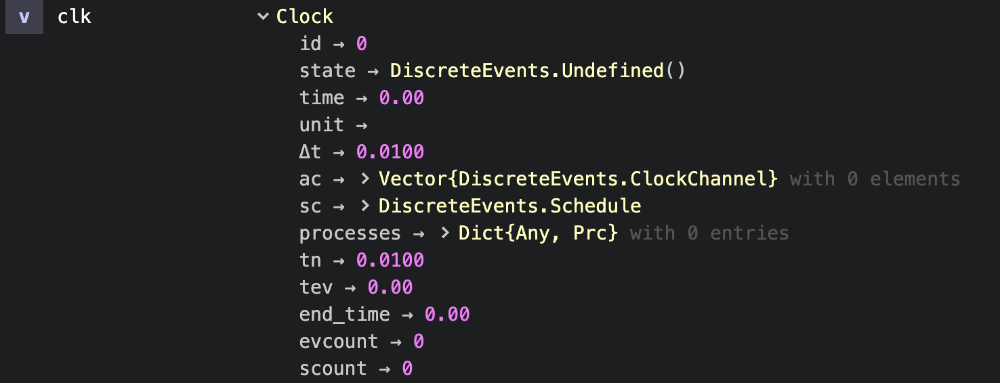
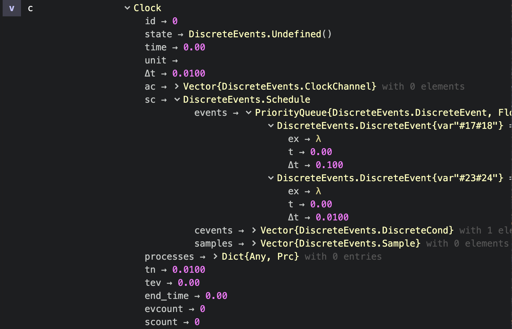

Diagnosis
Clocks
As usual in Julia you can access clock parameters by clock.parameter:
julia> clk # normally pretty printing is enabled
Clock 0, thread 1 (+ 0 ac): state=DiscreteEvents.Undefined(), t=0.0 , Δt=0.01 , prc:0
scheduled ev:0, cev:0, sampl:0
julia> clk. # with clk. + tab + tab you get the parameters
ac end_time evcount id processes sc scount state tev time tn unit Δt
julia> clk.time # then you can select one of them
0.0You can switch off pretty printing and then get the Julia Base.show_default display:
julia> DiscreteEvents.prettyClock(false)
julia> clk
Clock(0, DiscreteEvents.Undefined(), 0.0, , 0.01, DiscreteEvents.ClockChannel[], DiscreteEvents.Schedule(DataStructures.PriorityQueue{DiscreteEvents.DiscreteEvent,Float64,Base.Order.ForwardOrdering}(), DiscreteEvents.DiscreteCond[], DiscreteEvents.Sample[]), Dict{Any,Prc}(), 0.01, 0.0, 0.0, 0, 0)In Juno's workspace then you can access a Clock variable's structure and dig deeper into it:

Events
The following clock shows that two timed events ev:2 and one conditional events cev:1 have been scheduled:
julia> c
Clock 0, thread 1 (+ 0 ac): state=DiscreteEvents.Undefined(), t=0.0 , Δt=0.01 , prc:0
scheduled ev:2, cev:1, sampl:0Registered events can be found in the scheduling structure c.sc of the clock. Better is to switch off pretty printing with DiscreteEvents.prettyClock(false) and to dive into them in the Atom workspace:

Processes
Three processes have been registered to the following clock:
julia> clock.processes
Dict{Any,Prc} with 3 entries:
0 => Prc(0, Task (runnable) @0x000000010fc82ad0, Clock 0, thrd 1 (+ 0 ac): state=DiscreteEvents.Undefined(), t=0.0 , Δt=0.01 , prc:3…
2 => Prc(2, Task (runnable) @0x000000010d13db10, Clock 0, thrd 1 (+ 0 ac): state=DiscreteEvents.Undefined(), t=0.0 , Δt=0.01 , prc:3…
1 => Prc(1, Task (runnable) @0x000000013a183190, Clock 0, thrd 1 (+ 0 ac): state=DiscreteEvents.Undefined(), t=0.0 , Δt=0.01 , prc:3…We can check process 0 with
julia> clock.processes[0].task
Task (runnable) @0x000000010fc82ad0If the task had failed, we would get the stacktrace with that command.